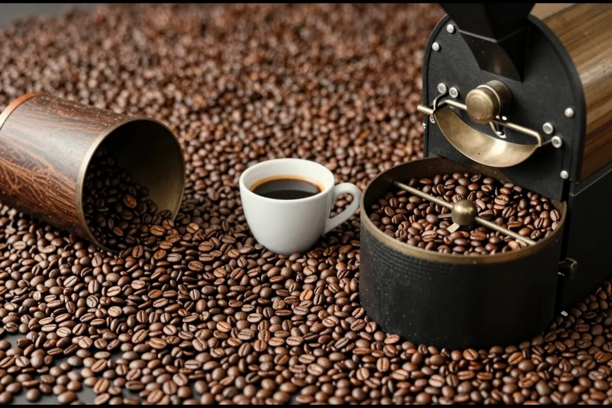

веб · 2009–now · также: Клип-реакция, Зацикленный GIF с подписью, Петля с Giphy
Короткий зацикленный клип из фильма, шоу или спорта, который отправляют вместо фразы. Кадр маленький, зернистый и часто несёт однострочную подпись плотными белыми прописными.

Главная идея
Зацикленная секунда настоящего лица передаёт чувство быстрее фразы, поэтому клип и есть ответ.
Принципы дизайна
Зацикливайте клип 1–4 секунды при 10–15 fps с бесшовным переходом от последнего кадра к первому.
Экспортируйте кадр шириной 480px и меньше в 256 цветах и оставляйте дизеринг и зерно видимыми.
Набирайте подпись плотными белыми прописными с чёрной обводкой 2px высотой 8–12% кадра.
Ставьте подпись в нижнюю треть кадра по центру, с отступом 4% от края.
Кадрируйте плотно на одно лицо или один жест, чтобы объект занимал 50–70% кадра.
Обрамляйте клип белой линией 1px на тёмной карточке #22222C, когда он показан в ленте.
Показывайте поисковый тег, например #facepalm, прописными 12px под клипом.